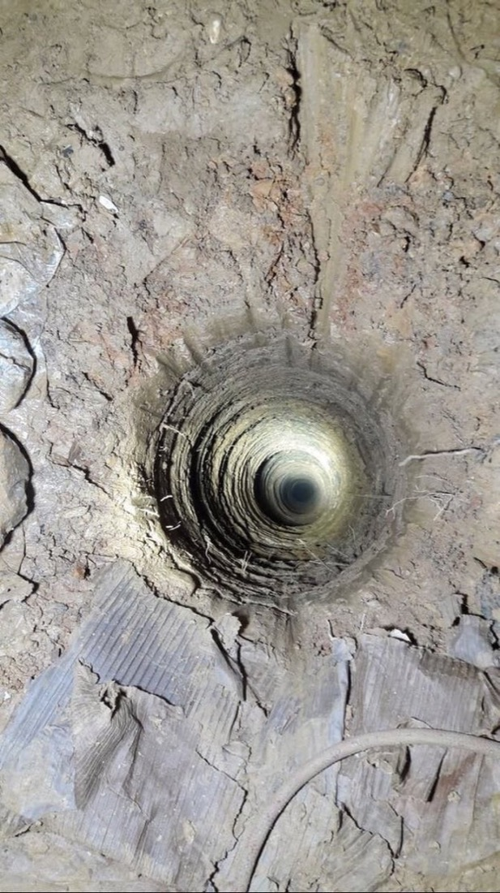

001
Rescue Arm
2017
Telescoping / soft gripper · BUILD TIME 3 hrs · Field deployed
At 16, I helped build a telescoping robotic arm used alongside firefighters to pull a trapped puppy to safety. We heard the news while preparing for a robotics competition and built it within three hours, with a soft gripper for field use.

Reuters · 2017
"Rescue of puppy from Istanbul well captivates Turks"
Read the story → Euronews · 2017"Robotic arm used to save puppy from well"
Read the story → New York Post · 2017"Puppy trapped in well captivates the entire country of Turkey"
Watch the clip →


Now building: Porter, an autonomous indoor delivery robot →